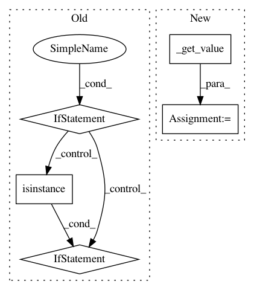

fb9c6af24400732aae9cf6cd3a84f916777ff655,dataset/pipeline.py,Pipeline,_make_model_args,#Pipeline#Any#Any#Any#,788
Before Change
kwargs = {**action["kwargs"], **kwargs}
for arg, data in kwargs.items():
if isinstance(data, dict):
data_dict = type(data)()
for key, item in data.items():
data_dict.update({map_data(key): map_data(item)})
data_item = data_dict
elif isinstance(data, (tuple, list)):
data_list = []
for item in data:
data_item = map_data(item)
data_list.append(data_item)
data_item = data_list
else:
data_item = map_data(data)
kwargs.update({arg: data_item})
return args, kwargs
After Change
kwargs = {**action["kwargs"], **kwargs}
kwargs = self._get_value(kwargs, batch=batch, model=model)
return args, kwargs
def _save_output(self, batch, model, output, save_to, mode="w"):
In pattern: SUPERPATTERN
Frequency: 3
Non-data size: 5
Instances
Project Name: analysiscenter/batchflow
Commit Name: fb9c6af24400732aae9cf6cd3a84f916777ff655
Time: 2017-10-26
Author: rhudor@gmail.com
File Name: dataset/pipeline.py
Class Name: Pipeline
Method Name: _make_model_args
Project Name: analysiscenter/batchflow
Commit Name: 29628cab50c7b84ed64776fa02f6eb6e29a55569
Time: 2018-01-12
Author: rhudor@gmail.com
File Name: dataset/pipeline.py
Class Name: Pipeline
Method Name: _exec_import_model
Project Name: mlflow/mlflow
Commit Name: 0ed27c5071061588aee0382673b4a5f1678e3370
Time: 2019-03-28
Author: mani@databricks.com
File Name: mlflow/utils/search_utils.py
Class Name: SearchFilter
Method Name: _get_comparison